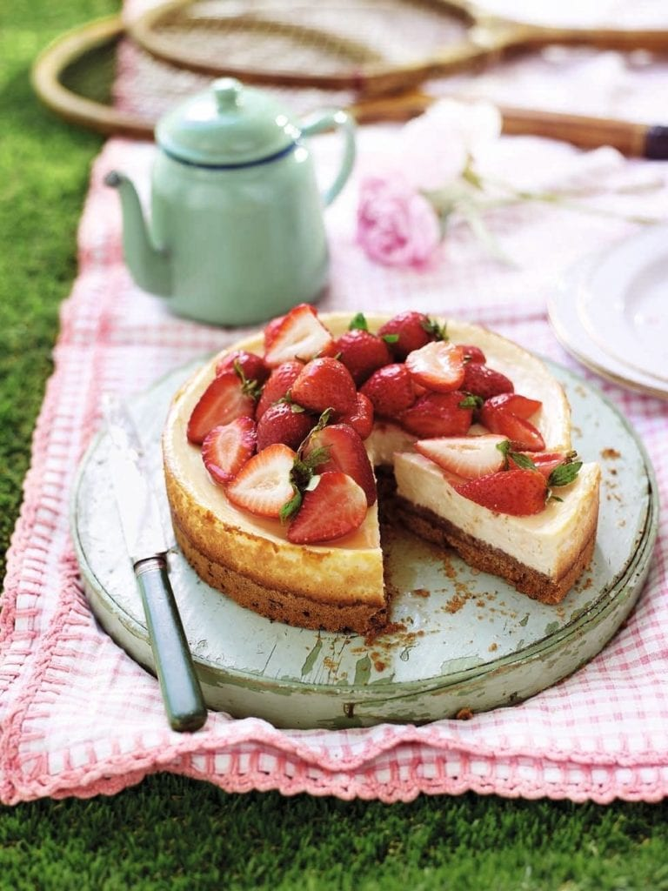

Strawberry Vanilla Baked Cheesecake

Description
Strawberries are the hero in this beautiful baked cheesecake recipe. You can make the recipe the day before serving, making it perfect for a summer dinner party.
Ingredients
For the cheesecake
- 300g digestive biscuits
- 60g melted butter
- 6-7g tub freeze-dried strawberries (from Sainsbury’s, Waitrose and Ocado)
- 600g full-fat cream cheese
- 150g caster sugar
- 1 tbsp plain flour
- Grated zest and juice 2 large lemons
- 3 medium free-range eggs, plus 2 yolks
- 200ml soured cream
- 1 vanilla pod, seeds scraped
For the topping
- 500g small British strawberries, some halved, some left whole
- 3 tbsp caster sugar
- Good splash Cointreau or other orange liqueur
- Juice ½ lemon
Steps
- Heat the oven to 160°C/fan140°C/ gas 3. Crush the digestives to fine crumbs, then mix in the melted butter and freeze-dried strawberries. Press into the base of a 20cm springform cake tin to cover completely. Chill in the fridge while you make the filling.
- Using an electric hand whisk, whip the cream cheese with the rest of the cheesecake ingredients in a bowl until light and fluffy. Spoon evenly over the chilled base, then bake for 60-70 minutes until set but slightly wobbly in the centre. Turn off the oven with the cheesecake inside and allow to cool completely (see tips).
- About 30 minutes before serving, put the strawberries with all the other topping ingredients into a bowl, stir to coat, then leave to macerate. Remove the cheesecake from the tin, decorate with the macerated strawberries and serve.